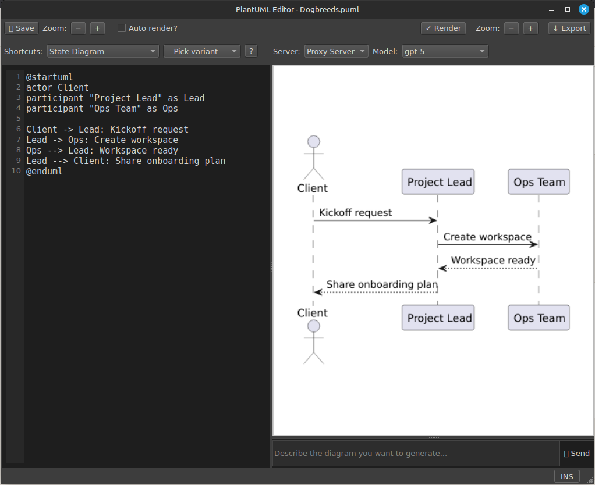
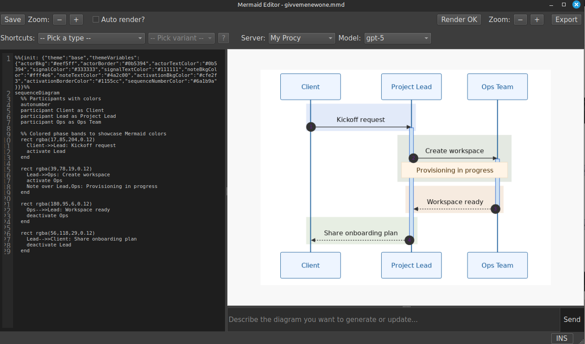

Draw inside the workspace where your knowledge lives.
StillPoint gives you three first-class ways to diagram: the visual freedom of Excalidraw, the precision of PlantUML, and the approachable text syntax of Mermaid. Each stays connected to the notes, projects, and decisions it explains. Draw manually, add AI when it helps, or ignore diagramming entirely when words are enough.
Choose the form that fits the thought.
Move between a hands-on canvas and diagrams-as-code without leaving StillPoint. These are complementary tools, not tiers: use one consistently or choose differently for each idea.
Excalidraw
Work in a fully embedded visual canvas with shapes, arrows, text, freehand drawing,
frames, images, zoom, and undo. StillPoint saves a native .excalidraw
scene plus a PNG preview.
PlantUML
Describe architecture, sequences, components, states, and other formal structures in durable text, with editable source and rendered output together.
Mermaid
Write readable flowcharts, sequences, mindmaps, timelines, and more in a concise syntax that remains easy to revise alongside Markdown notes.
The diagram stays with the knowledge around it.
Whichever format you choose, the source lives in your vault beside the notes it supports. StillPoint keeps editing, rendering, previews, and related context in one workspace so a drawing does not become an orphaned artifact in another service.
Source you can keep
Excalidraw scenes, PlantUML source, and Mermaid source remain editable files rather than locked exports.
Connected to context
Keep diagrams beside a project or meeting. Excalidraw can also link individual canvas elements directly to pages in the active vault.
Manual by default
Every diagramming mode works without AI. Open the assistant only when generation, revision, or analysis would actually help.
AI understands the format you chose.
Ask the selected model to create, explain, or revise a diagram. StillPoint supplies format-specific instructions and the current source: native scene structure for Excalidraw, PlantUML syntax for PlantUML, and Mermaid syntax for Mermaid. The result stays editable in its original format, and you remain in control of whether to apply it.
Excalidraw-aware
Generate or revise native canvas elements, analyze the scene, and discuss a compact summary without flattening the drawing into an image.
PlantUML-aware
Draft formal diagrams from a prompt, refine the text source, preview the rendering, and review a clean diff before applying changes.
Mermaid-aware
Create or adjust Mermaid diagrams using syntax suited to the requested diagram type while keeping the source readable.
Optional and reviewable
Choose your AI server and model, inspect changes, and leave AI disabled entirely when you prefer to draw or write the source yourself.
| Mode | Example request |
|---|---|
| Excalidraw | "Draw an ATM transaction as a swimlane workflow." |
| PlantUML | "Create a component diagram for this event pipeline." |
| Mermaid | "Turn these support steps into a readable flowchart." |
Draw the idea, then capture the reasoning right next to it.
Readable by humans, renderable by StillPoint.
@startuml
actor Client
participant "Project Lead" as Lead
participant "Ops Team" as Ops
Client -> Lead: Kickoff request
Lead -> Ops: Create workspace
Ops --> Lead: Workspace ready
Lead --> Client: Share onboarding plan
@enduml
sequenceDiagram
participant Client
participant Lead as Project Lead
participant Ops as Ops Team
Client->>Lead: Kickoff request
Lead->>Ops: Create workspace
Ops-->>Lead: Workspace ready
Lead-->>Client: Share onboarding plan

